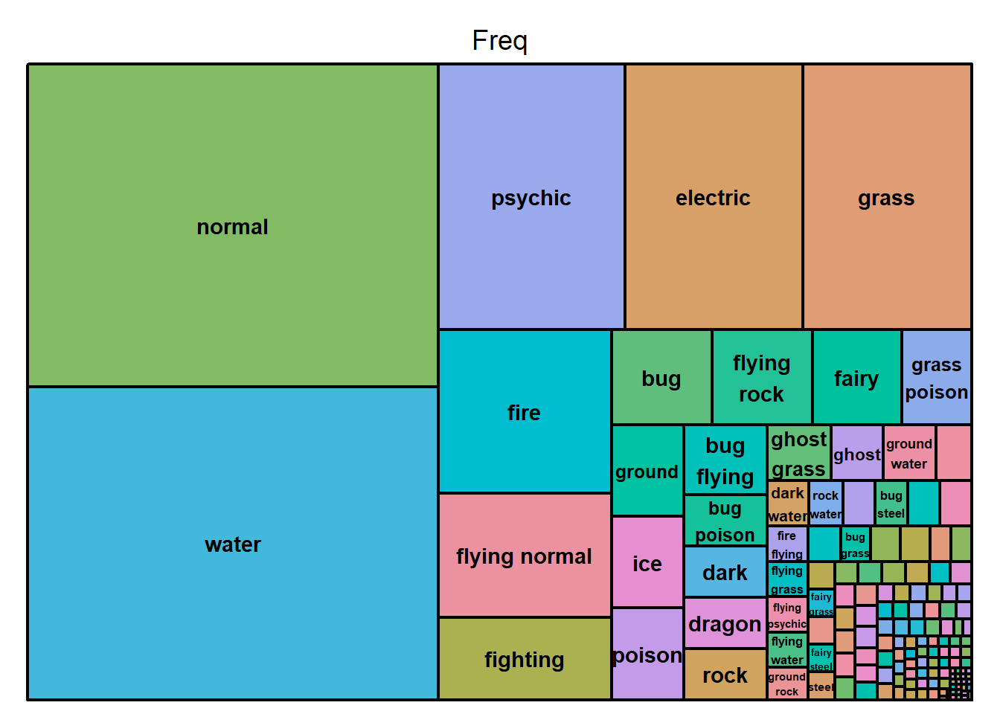

Homework10
Noah W.K. Mattheis
2025-04-09
Step 1 - Download/Upload Data
Downloading dataset of choice from TidyTuesday - I am choosing Pokemon :D
# Using R
# Option 1: tidytuesdayR R package
## install.packages("tidytuesdayR")
library(tidytuesdayR)
tuesdata <- tidytuesdayR::tt_load('2025-04-01')## ---- Compiling #TidyTuesday Information for 2025-04-01 ----
## --- There is 1 file available ---
##
##
## ── Downloading files ───────────────────────────────────────────────────────────
##
## 1 of 1: "pokemon_df.csv"## ---- Compiling #TidyTuesday Information for 2025-04-01 ----
## --- There is 1 file available ---
##
##
## ── Downloading files ───────────────────────────────────────────────────────────
##
## 1 of 1: "pokemon_df.csv"pokemon_df <- tuesdata$pokemon_df
# Option 2: Read directly from GitHub
# pokemon_df <- readr::read_csv('https://raw.githubusercontent.com/rfordatascience/tidytuesday/main/data/2025/2025-04-01/pokemon_df.csv')
str(pokemon_df)## spc_tbl_ [949 × 22] (S3: spec_tbl_df/tbl_df/tbl/data.frame)
## $ id : num [1:949] 1 2 3 4 5 6 7 8 9 10 ...
## $ pokemon : chr [1:949] "bulbasaur" "ivysaur" "venusaur" "charmander" ...
## $ species_id : num [1:949] 1 2 3 4 5 6 7 8 9 10 ...
## $ height : num [1:949] 0.7 1 2 0.6 1.1 1.7 0.5 1 1.6 0.3 ...
## $ weight : num [1:949] 6.9 13 100 8.5 19 90.5 9 22.5 85.5 2.9 ...
## $ base_experience: num [1:949] 64 142 236 62 142 240 63 142 239 39 ...
## $ type_1 : chr [1:949] "grass" "grass" "grass" "fire" ...
## $ type_2 : chr [1:949] "poison" "poison" "poison" NA ...
## $ hp : num [1:949] 45 60 80 39 58 78 44 59 79 45 ...
## $ attack : num [1:949] 49 62 82 52 64 84 48 63 83 30 ...
## $ defense : num [1:949] 49 63 83 43 58 78 65 80 100 35 ...
## $ special_attack : num [1:949] 65 80 100 60 80 109 50 65 85 20 ...
## $ special_defense: num [1:949] 65 80 100 50 65 85 64 80 105 20 ...
## $ speed : num [1:949] 45 60 80 65 80 100 43 58 78 45 ...
## $ color_1 : chr [1:949] "#78C850" "#78C850" "#78C850" "#F08030" ...
## $ color_2 : chr [1:949] "#A040A0" "#A040A0" "#A040A0" NA ...
## $ color_f : chr [1:949] "#81A763" "#81A763" "#81A763" NA ...
## $ egg_group_1 : chr [1:949] "monster" "monster" "monster" "monster" ...
## $ egg_group_2 : chr [1:949] "plant" "plant" "plant" "dragon" ...
## $ url_icon : chr [1:949] "//archives.bulbagarden.net/media/upload/7/7b/001MS6.png" "//archives.bulbagarden.net/media/upload/a/a0/002MS6.png" "//archives.bulbagarden.net/media/upload/0/07/003MS6.png" "//archives.bulbagarden.net/media/upload/7/7d/004MS6.png" ...
## $ generation_id : num [1:949] 1 1 1 1 1 1 1 1 1 1 ...
## $ url_image : chr [1:949] "https://raw.githubusercontent.com/HybridShivam/Pokemon/master/assets/images/001.png" "https://raw.githubusercontent.com/HybridShivam/Pokemon/master/assets/images/002.png" "https://raw.githubusercontent.com/HybridShivam/Pokemon/master/assets/images/003.png" "https://raw.githubusercontent.com/HybridShivam/Pokemon/master/assets/images/004.png" ...
## - attr(*, "spec")=
## .. cols(
## .. id = col_double(),
## .. pokemon = col_character(),
## .. species_id = col_double(),
## .. height = col_double(),
## .. weight = col_double(),
## .. base_experience = col_double(),
## .. type_1 = col_character(),
## .. type_2 = col_character(),
## .. hp = col_double(),
## .. attack = col_double(),
## .. defense = col_double(),
## .. special_attack = col_double(),
## .. special_defense = col_double(),
## .. speed = col_double(),
## .. color_1 = col_character(),
## .. color_2 = col_character(),
## .. color_f = col_character(),
## .. egg_group_1 = col_character(),
## .. egg_group_2 = col_character(),
## .. url_icon = col_character(),
## .. generation_id = col_double(),
## .. url_image = col_character()
## .. )
## - attr(*, "problems")=<externalptr>Looking at the data, it seems that we get the Pokemon’s name, height, weight, type, BST Distribution, Base Experience for upon defeating said Pokemon, Generation ID, colors, image of the Pokemon, and egg group(s)
Step 2 - Visualize the Data
Now time to practice our data plotting skills with this data
Lets try a scatter pie chart
## ── Attaching core tidyverse packages ──────────────────────── tidyverse 2.0.0 ──
## ✔ dplyr 1.1.4 ✔ readr 2.1.5
## ✔ forcats 1.0.0 ✔ stringr 1.5.1
## ✔ lubridate 1.9.3 ✔ tibble 3.2.1
## ✔ purrr 1.0.2 ✔ tidyr 1.3.1
## ── Conflicts ────────────────────────────────────────── tidyverse_conflicts() ──
## ✖ dplyr::filter() masks stats::filter()
## ✖ dplyr::lag() masks stats::lag()
## ℹ Use the conflicted package (<http://conflicted.r-lib.org/>) to force all conflicts to become errors
## Registered S3 method overwritten by 'GGally':
## method from
## +.gg ggplot2
##
##
## Attaching package: 'ggmosaic'
##
##
## The following object is masked from 'package:GGally':
##
## happy
##
##
## scatterpie v0.2.4 Learn more at https://yulab-smu.top/Mosaic/Partition Charts
# Trying a 1 to 2 Factor Partition Chart
# Alright, I might have to make some calculations and for loops maybe?
# First creating variables I will need for further graphs, such as a base stat total column, an all types columns to combine type1 and type2 columns, and a freq count of unique type combinations
# Creating all_type variable
all_type <- ifelse(is.na(pokemon_df$type_2), pokemon_df$type_1, paste(pokemon_df$type_1,pokemon_df$type_2))
# Function to alphabetically sort type strings
standardize_types <- function(type_str) {
type_split <- unlist(strsplit(type_str, " "))
type_sorted <- sort(type_split)
paste(type_sorted, collapse = " ")
}
# Apply to the full list
all_type_standardized <- sapply(all_type, standardize_types)
# Check result
head(data.frame(original = all_type, standardized = all_type_standardized), 15)## original standardized
## 1 grass poison grass poison
## 2 grass poison grass poison
## 3 grass poison grass poison
## 4 fire fire
## 5 fire fire
## 6 fire flying fire flying
## 7 water water
## 8 water water
## 9 water water
## 10 bug bug
## 11 bug bug
## 12 bug flying bug flying
## 13 bug poison bug poison
## 14 bug poison bug poison
## 15 bug poison bug poison# all_type <- if (is.na(pokemon_df$type_2)) {
# all_type <- pokemon_df$type_2
# } else if {}
pokemon_df$all_type <- c(all_type)
pokemon_df$all_type_standardized <- c(all_type_standardized)
pokemon_df$basestat <- c(bst)
# Careful when using group_by and not calling ungroup, grouping will carry over if ungroup is not called
pokemon_df <- pokemon_df %>%
group_by(all_type) %>%
mutate(Freq = n_distinct(pokemon))# Counts the number of distinct values within each group
# Trying to get the top 10 most common pokemon types and pokemon in it but not getting there completely :/
df_top_10 <- pokemon_df %>%
ungroup()%>%
mutate(rank = rank(Freq, ties.method = "first")) %>%
filter(rank <= 10)
# Seems that this chart shows the commonality of types - with Water being the most common and flying being the least common - at least in terms of type 1 which makes sense, there are very few mono flying types
p2 <- ggplot(data = pokemon_df) +
geom_mosaic(aes(x = product(type_1),
fill=type_1),
divider=mosaic("v")) +
labs(title='mosaic v')
p2 # Shows type commonality## Warning: The `scale_name` argument of `continuous_scale()` is deprecated as of ggplot2
## 3.5.0.
## This warning is displayed once every 8 hours.
## Call `lifecycle::last_lifecycle_warnings()` to see where this warning was
## generated.## Warning: The `trans` argument of `continuous_scale()` is deprecated as of ggplot2 3.5.0.
## ℹ Please use the `transform` argument instead.
## This warning is displayed once every 8 hours.
## Call `lifecycle::last_lifecycle_warnings()` to see where this warning was
## generated.
p3 <- ggplot(data = pokemon_df) +
geom_mosaic(aes(x = product(type_1, type_2),
fill=type_1),
divider=mosaic("v")) +
labs(title='mosaic v')
p3 # tries to show all type combinations using type 1 as one axis and type 2 as another, comes out gross## Warning: `unite_()` was deprecated in tidyr 1.2.0.
## ℹ Please use `unite()` instead.
## ℹ The deprecated feature was likely used in the ggmosaic package.
## Please report the issue at <https://github.com/haleyjeppson/ggmosaic>.
## This warning is displayed once every 8 hours.
## Call `lifecycle::last_lifecycle_warnings()` to see where this warning was
## generated.# Seems like we got it to show types per generation but only by type 1
# NA For generation represents pokemon like megas or alt forms that have different stats, I wonder why they are left out? Especially pokemon like Meowstic with a female and male
p4 <- ggplot(data = pokemon_df) +
geom_mosaic(aes(x = product(generation_id, type_1),
fill=type_1),
divider=mosaic("v")) +
labs(title='mosaic v')
p4 # Shows type distribution per generation, can see gen 1 has little to no steel types and dark types# Now that we have a combined type variable, lets try this chart again with total type combinations
# p4again <- ggplot(data = pokemon_df) +
# geom_mosaic(aes(x = product(generation_id, all_type),
# fill=all_type),
# divider=mosaic("v")) +
# labs(title='mosaic v')
# p4again # Ok there are too many combinations - does not look good/cant even see it because of the legendRidgeline Plot
# Here I can show Base Stat Total range per first Pokemon Type -> Cool
p5 <- ggplot(data=pokemon_df) +
aes(x=basestat,y=type_1,fill=type_1) +
ggridges::geom_density_ridges() +
ggridges::theme_ridges()
p5 ## Picking joint bandwidth of 47.4# Trying again but with all types
# p5 <- ggplot(data=pokemon_df) +
# aes(x=basestat,y=all_type_standardized,fill=all_type_standardized) +
# ggridges::geom_density_ridges() +
# ggridges::theme_ridges()
# p5 # too much info, want to change this for the first 10 most common types
p5again <- ggplot(data=pokemon_df) +
aes(x=basestat,y=as.character(generation_id),fill=as.character(generation_id)) +
ggridges::geom_density_ridges() +
ggridges::theme_ridges()
p5again # got it to work with by generation by forcing the generation_id col to be a char and not numeric as it is a qualitative variable, not quantitative## Picking joint bandwidth of 39.3# Need to clean up NA, mega pokemon are just better than normal - whould've thought? that and for some reason alt rotom forms are also NA, same with Alolan forms which makes this data skewed/inaccurate
# Also has totem pokemon - wild
# Gen 7 has a larger average bst - power creep anyone? Waffle Plot
# Creating a waffle plot to show distribution of number of pokemon per generation
tabled_data <- as.data.frame(table(gen_id=pokemon_df$generation_id))
p6 <- ggplot(data=tabled_data) +
aes(fill = gen_id, values = Freq) +
waffle::geom_waffle(n_rows = 15, size = 0.33, colour = "white") +
coord_equal() +
theme_void()
p6Tree Map
# Maybe using a tree map we can show overall commonality of types better
treemap(dtf=pokemon_df,
index="type_1",
vSize="Freq",
type="index") # rock flying being common is wild when there are 3 pok totaltreemap(dtf=pokemon_df,
index=c("type_1", "type_2"),
vSize="Freq",
type="index") # rock flying being common is wild when there are 3 pok total